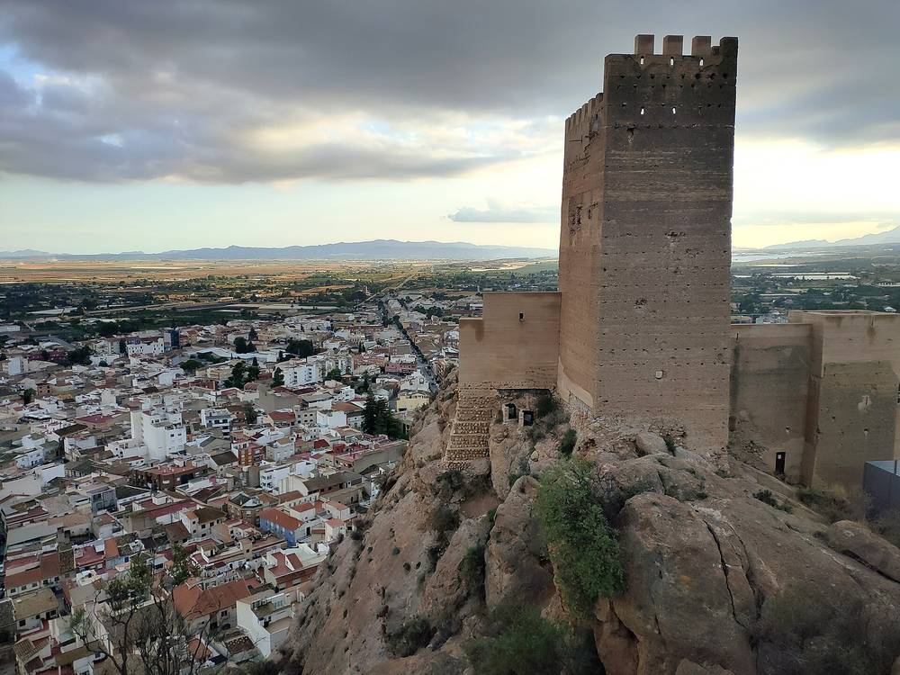

스페인 무르시아 소비자 협동조합 '라 솔라르', 에너지공동체용 태양광 4곳 짓는다…합계 293kW로 약 400가구에 나눔 전기, 그중 40가구는 취약가구

창립 10년 모임에서 조합원 350명 넘게 모인 자리에 계획 공개…푸엔테 토시노스 2월 첫 착공, 부야스는 아몬드 밭 영농형으로 늦어도 내년 11월 완공 목표
스페인 남동부 무르시아주의 소비자 에너지협동조합 라 솔라르(La Solar Energía)가 조합이 꾸리는 에너지공동체에 전기를 댈 태양광발전소 4곳을 짓는다. 발전소는 부야스(Bullas)·로스알카사레스(Los Alcázares)·알하마데무르시아(Alhama de Murcia)·무르시아시 푸엔테 토시노스(Puente Tocinos)에 들어설 계획으로, 4곳을 합친 설비는 293kW, 저장장치는 382kWh이며 공동 자가소비 방식으로 약 400가구에 전기를 나누고 그중 약 40가구는 취약 소비자다. 첫 공사는 100곳 넘는 소비 지점에 전기를 댈 푸엔테 토시노스에서 2월에 시작하고 알하마데무르시아와 로스알카사레스는 4~7월 사이 착공할 예정이며, 4곳 가운데 3곳은 생태전환부 산하 에너지다변화절약원(IDAE)의 보조금을 받는다. 부야스 설비는 아몬드 밭에 패널을 함께 얹는 영농형으로 EU 'Life Rural Power' 사업의 하나인데, 안토니오 솔레르 발카르셀(Antonio Soler Valcárcel) 부회장은 "늦어도 내년 11월, 어쩌면 그보다 일찍 마칠 것"이라고 말했다. 조합은 지붕에 패널을 단 조합원의 남는 전기를 패널을 달 수 없는 조합원과 나누는 방식도 검토하고 있으며, 4곳의 운영 결과를 평가해 주 안의 다른 지자체로 넓힐 계획이다. 이 계획은 창립 10년을 맞은 조합이 조합원 350명 넘게 모인 자리에서 내놓았고, 조합은 앞으로의 과제로 저장, 생산능력 관리, 개인·소상공인의 전기차 이동을 꼽았다.
시민에너지 관점
4곳을 합쳐도 293kW, 한 곳 평균 100kW가 안 되는 작은 발전소를 마을마다 세워 바로 옆 가구에 나누고, 처음부터 열 가구 중 한 가구꼴로 취약가구 몫을 정해 둔 것이 라 솔라르 계획의 요점이다. 작게 나눠 지으면 효율이 떨어진다는 지적이 나올 수 있지만, 가까운 곳에서 만들어 가까운 곳에서 쓰는 전기는 먼 송전망에 덜 기대고 382kWh 저장장치까지 함께 두면 이웃끼리 쓰는 시간을 맞출 수 있다. 프랑스도 2017년부터 한 발전소의 전기를 이웃 여러 소비자가 나눠 쓰는 '집단 자가소비'를 제도로 열어, 주민이 직접 발전소의 주인이자 손님이 되는 길을 넓혀 왔다. 국내에서도 공동주택·마을 단위로 이웃끼리 태양광 전기를 나눠 쓰는 공동 자가소비를 허용하고, 그 설계 안에 취약가구 몫을 처음부터 넣는 제도를 서둘러 마련해야 한다.
출처: La Verdad 2026-11-01 Pepa García 원문 보기
スペイン・ムルシアの消費者協同組合「ラ・ソラール」、エネルギーコミュニティ向け太陽光4カ所を建設へ…合計293kWで約400世帯に電気を分け合い、うち40世帯は脆弱世帯
創立10年の集まりで350人を超える組合員に計画を公表…プエンテ・トシノスで2月に最初の着工、ブジャスはアーモンド畑の営農型で遅くとも来年11月の完成を目指す
スペイン南東部ムルシア州の消費者エネルギー協同組合ラ・ソラール（La Solar Energía）が、組合の運営するエネルギーコミュニティに電気を供給する太陽光発電所4カ所を建設する。発電所はブジャス（Bullas）、ロス・アルカサレス（Los Alcázares）、アルハマ・デ・ムルシア（Alhama de Murcia）、ムルシア市プエンテ・トシノス（Puente Tocinos）に設ける計画で、4カ所を合わせた設備は293kW、蓄電設備は382kWhとなり、共同自家消費の方式で約400世帯に電気を分け合い、そのうち約40世帯は脆弱な消費者だ。最初の工事は100を超える消費地点に電気を送るプエンテ・トシノスで2月に始まり、アルハマ・デ・ムルシアとロス・アルカサレスは4～7月に着工する予定で、4カ所のうち3カ所は環境移行省傘下のエネルギー多様化・節約研究所（IDAE）の補助金を受ける。ブジャスの設備はアーモンド畑にパネルを組み合わせる営農型で、EUの「Life Rural Power」事業の一つとなっており、アントニオ・ソレール・バルカルセル（Antonio Soler Valcárcel）副理事長は「遅くとも来年11月、もしかするとそれより早く完成する」と述べた。組合は屋根にパネルを設けた組合員の余剰電力を、パネルを設置できない組合員と分け合う方式も検討しており、4カ所の運営結果を評価したうえで州内のほかの自治体にも広げる計画だ。この計画は創立10年を迎えた組合が350人を超える組合員の集まりで示したもので、組合は今後の課題として蓄電、生産能力の管理、個人・小規模事業者の電動モビリティを挙げた。
市民エネルギーの視点
4カ所を合わせても293kW、1カ所平均100kWに満たない小さな発電所を地域ごとに建ててすぐ隣の世帯と分け合い、最初から10世帯に1世帯の割合で脆弱世帯の分を決めておいたことが、ラ・ソラールの計画の要点だ。小さく分けて建てると効率が落ちるという指摘もありうるが、近くでつくって近くで使う電気は遠くの送電網への依存が小さく、382kWhの蓄電設備を併せて置けば近隣どうしで使う時間を合わせることもできる。フランスも2017年から一つの発電所の電気を近隣の複数の消費者が分け合う「集団自家消費」を制度として開き、住民が自ら発電所の持ち主であり利用者にもなる道を広げてきた。韓国でも集合住宅や集落単位で近隣どうしが太陽光の電気を分け合う共同自家消費を認め、その設計に最初から脆弱世帯の分を組み込む制度を急いで整えるべきだ。
出典: La Verdad 2026-11-01 Pepa García 原文を読む
西班牙穆尔西亚消费者合作社“拉索拉尔”将为能源社区建设4座光伏电站…合计293kW，向约400户分享电力，其中40户为弱势家庭
在成立10周年聚会上向逾350名社员公布计划…普恩特托西诺斯2月率先动工，布利亚斯为杏树园农光互补项目，最迟明年11月完工
西班牙东南部穆尔西亚大区的消费者能源合作社拉索拉尔（La Solar Energía）将建设4座光伏电站，为合作社运营的能源社区供电。电站计划设在布利亚斯（Bullas）、洛斯阿尔卡萨雷斯（Los Alcázares）、阿尔哈马德穆尔西亚（Alhama de Murcia）以及穆尔西亚市的普恩特托西诺斯（Puente Tocinos），4座合计装机293kW、储能382kWh，以共享自发自用方式向约400户分享电力，其中约40户为弱势消费者。首个工程将于2月在普恩特托西诺斯开工，向100多个用电点供电；阿尔哈马德穆尔西亚和洛斯阿尔卡萨雷斯预计在4月至7月间开工，4座中有3座获得生态转型部下属能源多元化与节约研究所（IDAE）的补贴。布利亚斯的设施是在杏树园上架设光伏板的农光互补项目，属于欧盟“Life Rural Power”计划的一部分，合作社副主席安东尼奥·索莱尔·巴尔卡塞尔（Antonio Soler Valcárcel）表示：“最迟明年11月完工，也许更早。”合作社还在研究让屋顶装有光伏板的社员把多余电力分给无法安装光伏板的社员，并计划在评估4座电站的运行结果后推广到大区内其他市镇。这一计划是在成立10周年的合作社逾350名社员聚会上提出的，合作社把储能、产能管理以及个人和小企业的电动出行列为今后的课题。
市民能源视角
拉索拉尔计划的要点在于：4座电站合计只有293kW，平均每座不到100kW，在各地建小电站直接分给邻近家庭，并从一开始就按大约每十户一户的比例留出弱势家庭的份额。有人会说分散建小电站效率较低，但就近发电、就近用电对远距离输电网的依赖更小，再配上382kWh的储能，邻里之间还能错开用电时间。法国自2017年起也把多个邻近用户分享同一座电站电力的“集体自发自用”纳入制度，扩大了居民既当电站主人又当用户的道路。韩国也应尽快允许以公寓小区或村庄为单位、邻里分享光伏电力的共享自发自用，并在制度设计之初就把弱势家庭的份额纳入其中。
来源: La Verdad 2026-11-01 Pepa García 查看原文
Murcia consumer cooperative La Solar to build four solar plants for its energy communities, sharing 293kW among about 400 households, 40 of them vulnerable
Plans unveiled to more than 350 members at its tenth-anniversary gathering; Puente Tocinos to break ground first in February, while an agrivoltaic plant over almond trees in Bullas is due by next November at the latest
La Solar Energía, a consumer energy cooperative in the Region of Murcia in south-eastern Spain, is to build four solar plants to supply the energy communities it runs. The plants are planned for Bullas, Los Alcázares, Alhama de Murcia and Puente Tocinos in the city of Murcia, with a combined 293kW of capacity and 382kWh of storage, and will share electricity through collective self-consumption with about 400 households, around 40 of them vulnerable consumers. Work will start first in February at Puente Tocinos, which will supply more than 100 consumption points, while Alhama de Murcia and Los Alcázares are expected to break ground between April and July, and three of the four plants receive grants from IDAE, the energy diversification and saving agency under the Ministry for the Ecological Transition. The Bullas plant is an agrivoltaic installation combined with an almond orchard and part of the EU's Life Rural Power project, and vice-president Antonio Soler Valcárcel said it "will be finished by next November at the latest, perhaps sooner." The cooperative is also considering letting members with rooftop panels share their surplus power with members who cannot install panels, and plans to assess how the four plants perform before extending the model to other municipalities in the region. The plans were presented at a gathering of more than 350 members marking the cooperative's tenth year, where it named storage, managing its production capacity and electric mobility for individuals and small businesses as its next challenges.
Citizen Energy View
The point of La Solar's plan is that it builds small plants, 293kW across four sites or under 100kW each on average, in separate localities to share with the households next door, and sets aside a share for vulnerable households from the start, roughly one in ten. Some may argue that building small and scattered lowers efficiency, but power made and used close by leans less on distant transmission lines, and pairing it with 382kWh of storage lets neighbours match generation to when they use it. France, too, opened "collective self-consumption" in 2017, allowing several nearby consumers to share the output of one plant, widening the path for residents to be both owners and users of their own power station. Korea should move quickly to allow collective self-consumption so neighbours in apartment complexes and villages can share solar power, and build a share for vulnerable households into the design from the outset.
Source: La Verdad 2026-11-01 Pepa García Read the original